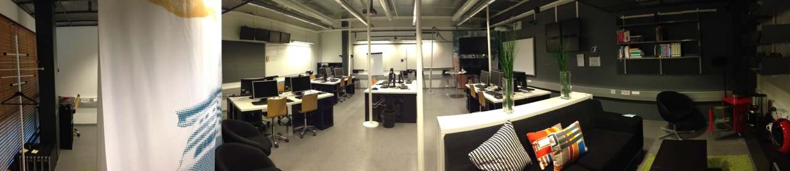

The Software Factory is a software development laboratory that has been designed and implemented at the Department of Computer Science, University of Helsinki. Here, students use state-of-the-art tools, modern processes and best practices to prototype and develop great software for businesses in an environment made to support top-level research.
The Software Factory is run by the Empirical Software Engineering Research Group at the University of Helsinki.
It’s great for students.
Interested in how software projects work in industry? Want some more experience before you graduate? Looking to make industry contacts? Writing a scientific paper and need some data? If you answered yes to any of these questions and have the bulk of your BSc studies in Computer Science completed, the Software Factory is for you. Read moreRead less
Software Factory projects combine advantages of both business and education. The environment is very close to real work life but on the other hand in Software Factory has less limitations of legacy code and market demands.
- You can use the latest methods, tools, and languages. No need to work with systems created ten years ago with fifteen-year-old methods.
- You are free to experiment with new things. No need to do the same thing every day.
- You can have a great influence on how things are done.
- You are allowed to fail fast, so that you can succeed over time.
Course information
Software Factory projects are Masters-level courses that last one period (a quarter semester). Courses are organized at the Department of Computer Science, University of Helsinki. You can get up to 12 credit points depending how much you want to work. The default is 5 credits, but by working four days a week and six hours a day, you get 10 credits. With five days you get 12. However, taking a Software Factory course does not mean that you cannot have any other courses at the same time. The work hours are flexible, the team decides when you should be present. Enrolment is open to students registered at the University of Helsinki.
Working opportunities
The Software Factory experience also connects students with businesses who are on the lookout for future employees. Since projects are usually real business cases with a company behind them, you could gain good contacts for future employment.
Research opportunities
Wondering how to do your master’s or bachelor’s thesis, or maybe a seminar paper? Software Factory provides a unique setup for doing research. Whether you are interested in software development methods, testing, web frameworks, cloud computing, or group dynamics. you can collect great empirical material in Software Factory.
It’s also great for industry.
Are you a startup with an great idea? Or an established company that is looking for an environment in which to prototype an innovative concept? Then Software Factory could be for you. Read moreRead less
How do we get the ball rolling?
The first step is to write a short project proposal and send it to us via email at . We will evaluate your proposal and get back to you with feedback.
What should a proposal contain?
To submit a project idea or proposal to Software Factory, you need the following:
- A contact person who can answer questions about the project idea and present the idea if required
- A project name
- A time-frame when the project can be started at the earliest and ended at the latest
- A five-sentence summary
- A technology description (bullet points is enough)
- A description of how you will support the project as a customer (eg. present in weekly meetings)
- Any supporting material (presentation slides, videos, etc.) that help describe the idea
In addition, the project selection process will evaluate:
- The goal of the company
- The expected outcome
- The innovation/newness of the idea
- The research questions of interest
- Contribution to one or more research projects
- Do you have a template I can use for the proposal?
The Software Factory Wiki has an up-to-date template you can use as a base for your proposal.
What are the selection criteria? What if our project is selected? What if it’s not?
Detailed information on project selection can be found here.
Not to mention great for academia.
Research in software engineering requires an authentic environment. At the Software Factory, we aim to provide an environment that emulates industry as closely as possible. Real customers, real business demand. Read moreRead less
A typical problem with software engineering research is that either it is difficult to find companies that provide reasonable research possibilities or the research is made with students in artificial environments. Software Factory provides a solution for this problem. In Software Factory you can do research in a very authentic environment. Most of the participants in Software Factory projects are students but the environment is very business-like.
The team works constantly together just like in a real work place.
There is always a real business demand behind the project, which makes the project context valid for research. At the same time the researchers can observe the team members and even participate in projects if participant observation is considered useful.
Methods, practices and tools
Researchers can bring their own research equipment (e.g. mobile devices that the team members use). Researchers can ask participants to answer questionnaires (paper or web) during the project. All written material (e.g. code and documentation) provided by the team is available for the research purposes. Researchers can come to the Factory room and do direct observation. Researchers can also take part in the projects and do participant observation. Researchers can interview team members and customers after the projects.
Not just for computer scientists
Software Factory is not a research laboratory only for computer scientists. A Factory project provides plenty of interesting research material for scientists from other fields as well.
Research by master level students
Master’s level students can also do research in Software Factory. If you are doing for example your master’s thesis, all methods that are available for other researchers are available for you as well.
Sounds interesting, how can I start?
If you think that Software Factory is a suitable place for you to do research or if you have any questions, please .